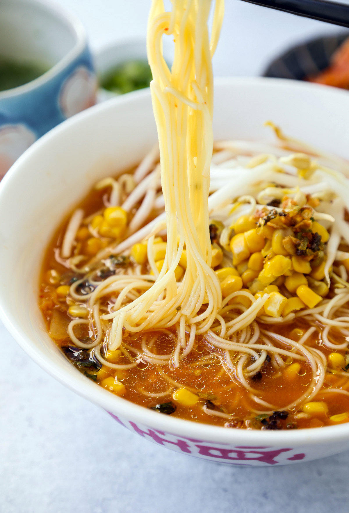

Miso Kimchi Ramen

Ingredients
- Garlic, Scallion and Vegetable Oil
- Vegetable Broth or Chicken Broth
- Miso Paste
- Oyster Sauce
- Gochugaru
- Kimchi
- Ramen Noodles
- Bean Sprouts
- Corn
How to Make Miso Kimchi Ramen
- Gather all kitchen tools and ingredients
- Place oil, minced garlic and chopped scallions in a small saucepan and turn the burner heat on low.
- Stir the mixture constantly - and cook until the scallions and garlic change to a golden color (5 Minutes). Turn heat off, transfer oil to a bowl and set aside.
- In a potover medium-high heat, add broth, miso paste, oyster sauce, gochugaru and kimchi. Mix well and bring to boil.
- Once boiling has been reached, lower the heat to simmer, cover and cook for another 10 minutes.
- In a separate pot, boil ramen noodles according to product packaging.
- Drain cooked noodles and prepare to assemble the ramen dish.
- Ladle the kimchi soup over the noodles and top with your bean sprouts and corn. Drizzle a bit of the garlic scallion over the kimichi ramen.
Main Page